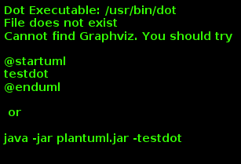
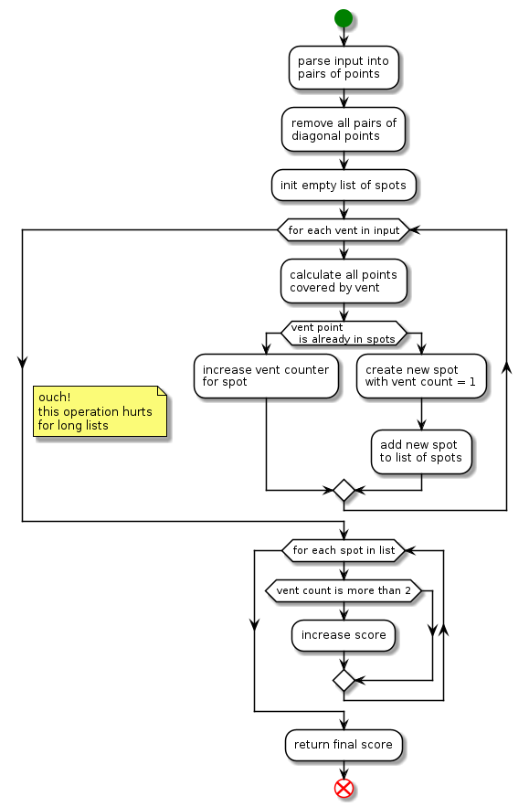
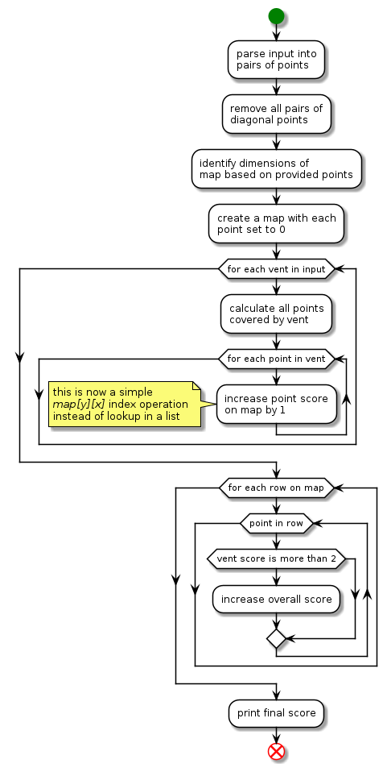

anoff
: anoff
Table of Contents
anoff
Day 00: python
Hello World
This will be the best advented code ever! Trying to use test driven development and typed python.
Code auto-formatted with black
print("hello world")
def get_message() -> str:
return "hello world"
def star_1() -> None:
print(get_message())
def star_2() -> None:
pass
if __name__ == "__main__":
star_1()
star_2()Day 01: python
Day 1: Sonar Sweep
Done with TDD in Python.
First Star
Opted to create a function that just creates deltas and then use list concatenation to identify those with positive deltas (increasing).
Second Star
Create windowed sum and then feed into function for star 1.
Source
def calc_deltas(numbers) -> list:
"""Calculate the delta between each point and the next."""
deltas = list()
for n in range(len(numbers) - 1):
d = numbers[n + 1] - numbers[n]
deltas.append(d)
return deltas
def windowed_sum(numbers, window_size=3):
sums = list()
assert window_size % 2 == 1, "window_size should be an uneven number"
for n in range(len(numbers) - window_size + 1):
s = sum(numbers[n : n + window_size])
sums.append(s)
return sums
def star1(puzzle_in):
deltas = calc_deltas(puzzle_in)
return sum([1 for d in deltas if d > 0])
def star2(puzzle_in):
sums = windowed_sum(puzzle_in)
deltas = calc_deltas(sums)
return sum([1 for d in deltas if d > 0])
def read_input(filepath):
numbers = list()
with open(filepath, "r") as f:
for line in f:
numbers.append(int(line))
return numbers
if __name__ == "__main__":
puzzle_in = read_input("input.txt")
print(f"Result for first star: {star1(puzzle_in)}")
print(f"Result for first star: {star2(puzzle_in)}")from solution import calc_deltas, read_input, star1, star2, windowed_sum
def test_calc_deltas():
assert calc_deltas([0, 4, 2, 6]) == [4, -2, 4]
def test_star1():
numbers = read_input("input_test.txt")
assert star1(numbers) == 7
def test_windowed_sum():
assert windowed_sum([0, 1, 0, 2, 5, 0, 3]) == [1, 3, 7, 7, 8]
numbers = read_input("input_test.txt")
assert windowed_sum(numbers) == [607, 618, 618, 617, 647, 716, 769, 792]
def test_star2():
numbers = read_input("input_test.txt")
assert star2(numbers) == 5Day 02: python
Day 2: Dive!
Done with TDD in Python.
First Star
Decided to immediately translate to 2D coordinates x/y and parse input to tuple representing dimension and value. This means y (depth) gets a negative sign if going up.
Rest was pretty straight forward, three test cases and done.
Second Star
Managing too many states gets annoying so I decided to introduce a Submarine class.
It has three integer states:
* aim
* x (forward position)
* y (depth position)
Input parsing is the same as before but if y value is passed the aim is adjusted, otherwise the sub is moved forward/down.
Source
from typing import List
class Submarine:
aim: int = 0
x: int = 0
y: int = 0
def __init__(self):
pass
def parse_command(self, cmd):
(dir, value) = cmd
if dir == "y":
self.aim += value
else:
self.move(value)
def move(self, value):
self.x += value
self.y += self.aim * value
def star1(puzzle_in):
pos = drive_sub(puzzle_in)
return pos[0] * pos[1]
def star2(puzzle_in):
s = Submarine()
for c in puzzle_in:
s.parse_command(c)
return s.x * s.y
def read_input(filepath):
"""Create input and parse it.
Returns:
(direction, value) tuple where direction = "x" or "y" and value is an integer
"""
commands = list()
with open(filepath, "r") as f:
for line in f:
(dir, value) = line.split(" ")
value = int(value)
if dir == "forward":
commands.append(("x", value))
elif dir == "down":
commands.append(("y", value))
elif dir == "up":
commands.append(("y", -value))
else:
raise ValueError(f"Unknown direction encountered: {dir} in line {line}")
return commands
def move_sub(command, start_position=(0, 0)):
"""Move the submarine for one step.
Args:
start_position: tuple of (x, y)
Returns:
position: tuple of (x, y)
"""
(dir, value) = command
(x, y) = start_position
if dir == "x":
x += value
else:
y += value
return (x, y)
def drive_sub(command_list: List, start_position=(0, 0)):
"""Move the sub for multiple steps."""
pos = start_position
for c in command_list:
pos = move_sub(c, pos)
return pos
if __name__ == "__main__":
puzzle_in = read_input("input.txt")
print(f"Result for first star: {star1(puzzle_in)}")
print(f"Result for first star: {star2(puzzle_in)}")from solution import *
def test_input_parser():
cmd = read_input("input_test.txt")
assert cmd[0] == ("x", 5)
assert cmd[1] == ("y", 5)
assert cmd[3] == ("y", -3)
def test_move_sub():
cmd = read_input("input_test.txt")
pos = (0, 0)
for c in cmd:
pos = move_sub(c, pos)
assert pos == (15, 10)
def test_star1():
cmd = read_input("input_test.txt")
score = star1(cmd)
assert score == 150
def test_sub():
s = Submarine()
cmd = read_input("input_test.txt")
for c in cmd:
s.parse_command(c)
assert s.x == 15
assert s.y == 60
def test_star1():
cmd = read_input("input_test.txt")
score = star2(cmd)
assert score == 900Day 03: python
Day 3: Binary Diagnostic
Done without TDD in Python.
This time I just tried to be as quick as possible, no clean design, no modularity, no tests just code.
Possible speed improvements: use proper debugging setup instead
First Star
It was clear that we need to step through the input numbers column-wise so I split the inputs already in the preprocessing. Disregarding any planning for most / least common I just started typing the code I had in mind to identify the most common number by strongly relying on list concatenation and writing one liners.
The main idea is to identify the most common number by just summing up all "1" and "0" per column. If the sum of all "1" is greater than the line count / 2 it means "1" is more common.
Finally just use python to convert the resulting binary number (string) into integer using int(x, 2)
Second Star
At first I regretted not having a modular code to reuse. But it turns out that I did not copy&paste any code from the first star. So reuse would have been limited unless having exactly the right function already defined in star1.
Even though my head was going this will be recursive I ended up just looping through the list from left-most to right-most digit, adding a condition to stop early in case there is only one entry remaining.
For finding the most common digit I used the same approach as described for the first star. Then filtered using list concatenation.
Source
def star1(puzzle_in):
digit_count = len(puzzle_in[0])
line_count = len(puzzle_in)
# sum up all digits per column
sum = [0] * digit_count
for digits in puzzle_in:
for n in range(digit_count):
sum[n] += digits[n]
# if "1" is the most common number in one position -> the sum should be > half line count
more_than_half = [d >= (line_count / 2) for d in sum]
gamma_binary_str = "".join(["1" if d else "0" for d in more_than_half])
gamma = int(gamma_binary_str, 2)
epsilon_binary_str = "".join(["0" if d else "1" for d in more_than_half])
epsilon = int(epsilon_binary_str, 2)
return epsilon * gamma
def star2(puzzle_in):
digit_count = len(puzzle_in[0])
line_count = len(puzzle_in)
def filter_by_most_common(lines, position, invert=False):
total_sum = sum([l[position] for l in lines])
most_common = "1" if total_sum >= (len(lines) / 2) else "0"
if invert:
most_common = "0" if most_common == "1" else "1"
filtered = [l for l in lines if l[position] == int(most_common)]
return filtered
lines = puzzle_in
pos = 0
while len(lines) > 1 and pos < digit_count:
lines = filter_by_most_common(lines, pos)
pos += 1
oxygen = int("".join([str(d) for d in lines[0]]), 2)
lines = puzzle_in
pos = 0
while len(lines) > 1 and pos < digit_count:
lines = filter_by_most_common(lines, pos, True)
pos += 1
co2 = int("".join([str(d) for d in lines[0]]), 2)
return co2 * oxygen
def read_input(filepath):
"""Create input and parse it."""
values = list()
with open(filepath, "r") as f:
for line in f:
digits = list(line.strip())
digits = [int(d) for d in digits]
values.append(digits)
return values
if __name__ == "__main__":
puzzle_in = read_input("input.txt")
print(f"Result for first star: {star1(puzzle_in)}")
print(f"Result for first star: {star2(puzzle_in)}")Unresolved directive in ../../../../../../day03/python/anoff/README.adoc - include::solution_test.py[]Day 04: python
Day 4: Giant Squid
Done once in a hacky way, took me ~40 minutes to get the right answer. Had issues with parsing the input data in the beginning (creating empty boards) and later in second star due to the fact that I did not consider multiple boards winning in one turn.
Want to redo it with TDD later.
later.. With TDD it took me same time even though I already had put some thought into it earlier. However ~10 minutes were wasted into researching how to do things prettier, aliasing types etc.
First Star
With TDD I first created test cases for the individual functions that will be needed (test case always using the provided example):
. test my input parser to return numbers and boards in correct number and type converted
. test play_board function that should always play one board with one number
. score_board to calculate the score based on unmarked numbers
. is_complete_board to identify if a board is completed or not
. a final test case validating that star1 function returns the correct value for example input
Using these tests the first star was super simple. The only thing that took a bit of thinking and decision making was how to mark the already seen numbers. I decided to keep it simple (maybe?) and just convert the seen numbers into string format, so unseen numbers are integers and seen ones are strings.
def star1(puzzle_in):
(numbers, boards) = puzzle_in
for number in numbers:
for board in boards:
play_board(board, number)
if is_complete_board(board):
return score_board(board) * number
return NoneSecond Star
Second star was pretty much the same as the first one until I ran into an issue with the loop handling in case you modify the looped variables elements. I had to introduce a second loop; go once over all boards and play them, then check if they are complete and remove the complete ones.
I figured this issue out with my star2 test case because it happened to not give the correct output.
|
Modifying loop variables is bad
When you
|
def star2(puzzle_in):
(numbers, boards) = puzzle_in
last_score = 0
for number in numbers:
for board in boards:
play_board(board, number)
# loop twice because otherwise removing leads to broken loop
for board in boards:
if is_complete_board(board):
last_score = score_board(board) * number
boards.remove(board)
return last_scoreSource
from typing import List, Tuple
Board = List[List[int]]
def read_input(filepath) -> Tuple[List[int], List[Board]]:
"""Create input and parse it.
Returns:
(numbers, boards) tuple of bingo numbers and bingo boards
"""
with open(filepath, "r") as f:
lines = f.readlines()
numbers = [int(n) for n in lines.pop(0).split(",")]
lines_per_board = 6
n_boards = int(len(lines) / lines_per_board)
boards = list()
for n in range(n_boards):
board = lines[n * lines_per_board + 1 : (n + 1) * lines_per_board]
for row_ix in range(len(board)):
row = [s.strip() for s in board[row_ix].split(" ")]
row = [int(s) for s in row if len(s)]
board[row_ix] = row
boards.append(board)
return (numbers, boards)
def play_board(board: Board, number: int) -> Board:
"""Play a single number on a board. Modifies board."""
n_rows = len(board)
n_cols = len(board[0])
for c_row in range(n_rows):
for c_col in range(n_cols):
if board[c_row][c_col] == number:
board[c_row][c_col] = str(number)
return board
def score_board(board: Board) -> int:
"""Calculate board score."""
score = 0
for row in board:
row_sum = sum([n for n in row if type(n) == int])
score += row_sum
return score
def is_complete_board(board: Board) -> bool:
"""Check if a board is compelete."""
for row in board:
int_elements = [n for n in row if type(n) == int]
if len(int_elements) == 0:
return True
for col_ix in range(len(board[0])):
col = [row[col_ix] for row in board]
int_elements = [n for n in col if type(n) == int]
if len(int_elements) == 0:
return True
return False
# tag::star1[]
def star1(puzzle_in):
(numbers, boards) = puzzle_in
for number in numbers:
for board in boards:
play_board(board, number)
if is_complete_board(board):
return score_board(board) * number
return None
# end::star1[]
# tag::star2[]
def star2(puzzle_in):
(numbers, boards) = puzzle_in
last_score = 0
for number in numbers:
for board in boards:
play_board(board, number)
# loop twice because otherwise removing leads to broken loop
for board in boards:
if is_complete_board(board):
last_score = score_board(board) * number
boards.remove(board)
return last_score
# end::star2[]
if __name__ == "__main__":
puzzle_in = read_input("input.txt")
print(f"Result for first star: {star1(puzzle_in)}")
puzzle_in = read_input("input.txt")
print(f"Result for first star: {star2(puzzle_in)}")from solution import *
def test_parse_input():
puzzle_in = read_input("input_test.txt")
(numbers, boards) = puzzle_in
assert len(numbers) > 20
assert type(numbers[0]) == int
assert len(boards) == 3
assert len(boards[0]) == 5
assert len(boards[0][0]) == 5
assert type(boards[0][0][0]) == int
def test_play_board():
puzzle_in = read_input("input_test.txt")
(numbers, boards) = puzzle_in
board = boards[0]
play_board(board, 7)
assert board[2][4] == "7"
play_board(board, 11)
assert board[2][4] == "7"
assert board[0][3] == "11"
def test_score_board():
puzzle_in = read_input("input_test.txt")
(numbers, boards) = puzzle_in
board = boards[2]
for n in [7, 4, 9, 5, 11, 17, 23, 2, 0, 14, 21, 24]:
play_board(board, n)
assert score_board(board) == 188
def test_is_complete_board():
puzzle_in = read_input("input_test.txt")
(numbers, boards) = puzzle_in
board = boards[2]
for n in [7, 4, 9, 5, 11, 17, 23, 2, 0, 14, 21]:
play_board(board, n)
assert is_complete_board(board) == False
play_board(board, 24)
assert is_complete_board(board) == True
def test_star1():
puzzle_in = read_input("input_test.txt")
score = star1(puzzle_in)
assert score == 4512
def test_star2():
puzzle_in = read_input("input_test.txt")
score = star2(puzzle_in)
assert score == 1924Day 05: python
Day 5: Hydrothermal Venture
Today I wanted to do another TDD vs hacky comparison. This time doing TDD (and initial thinking) first and then later see how fast I can hack it knowing the way forward. TDD approach took me 80 minutes T_T, partially due to initial design error, see explanation for first star.
TIL
-
underestimated how big this puzzles get…again
-
when tracking objects try to create a map that can be indexed easily rather than relying on searching items in a list with every iteration
-
== 2is not the same as>= 2
First Star
At first I was focused only on the example and led astray by its small numbers - as it happens every year.
My first approach was to just create points for each entry in the input list and if these points already exist, increase their counter.
For this purpose I introduced two classes, one for plain two-dimension points and another that contains a counter for vents on this point using P2D as base class.


This approach worked fine for the test example but already became a performance nightmare even when using only 20% of the real input.
The main issue was that individual vents are way bigger than initially anticipated, so relying on the vent point is already in spots operation was way too inefficient.
I decided to opt for another design that went for creating a map of the area - similar as proposed through the challenge description.
My new design looked like this:

Luckily a lot of functions I had written for my initial approach could be reused. With all these operations put into neat little functions the function for star1 was easy:
def star1(puzzle_in):
remove_diagonal_entries(puzzle_in)
p = get_board_size(puzzle_in)
spots = create_map(p.x, p.y)
for entry in puzzle_in:
mark_spots(spots, entry)
# print_map(spots)
spots_with_two_vents = 0
for row in spots:
for point in row:
if point >= 2:
spots_with_two_vents += 1
return spots_with_two_ventsSecond Star
What needed to be done here is refactor the existing code to work with diagonal lines, in particular the get all points between these two points portion of my P2D class.
There was one issue initially that was not covered by my test cases but discovered when testing for the example output for star2. I debugged a little and realized my geometric approach to finding all points on a vent worked only in certain cases. I added another test case for the broken scenario and vent on to refactor my functions.
After this was done star2 was basically the same code as star1 without removing the diagonal points.
def star2(puzzle_in):
p = get_board_size(puzzle_in)
spots = create_map(p.x, p.y)
for entry in puzzle_in:
mark_spots(spots, entry)
# print_map(spots)
spots_with_two_vents = 0
for row in spots:
for point in row:
if point >= 2:
spots_with_two_vents += 1
return spots_with_two_ventsSource
def star1(puzzle_in):
remove_diagonal_entries(puzzle_in)
p = get_board_size(puzzle_in)
spots = create_map(p.x, p.y)
for entry in puzzle_in:
mark_spots(spots, entry)
# print_map(spots)
spots_with_two_vents = 0
for row in spots:
for point in row:
if point >= 2:
spots_with_two_vents += 1
return spots_with_two_ventsfrom solution import *
def test_parse_input():
puzzle_in = read_input("input_test.txt")
assert len(puzzle_in) == 10
e1 = puzzle_in[0]
assert len(e1) == 2
assert e1[0] == P2D(0, 9)
def test_remove_diagonal_entries():
puzzle_in = read_input("input_test.txt")
remove_diagonal_entries(puzzle_in)
assert len(puzzle_in) == 6, "Should modify list in place"
def test_p2d_points_to():
p1 = P2D(0, 0)
points = p1.points_to(P2D(3, 0))
assert len(points) == 4
assert p1 in points
assert P2D(3, 0) in points
assert len(p1.points_to(p1)) == 1, "Should return single point when going to itself"
def test_create_map():
m = create_map(5, 2)
assert len(m) == 3
assert len(m[0]) == 6
assert m[1][2] == 0
def test_star1():
puzzle_in = read_input("input_test.txt")
score = star1(puzzle_in)
assert score == 5
def test_get_board_size():
puzzle_in = read_input("input_test.txt")
puzzle_in.append([P2D(4, 2), P2D(4, 11)])
p = get_board_size(puzzle_in)
assert p.x == 9
assert p.y == 11
# part 2
def test_p2d_points_to_diagonal():
p1 = P2D(1, 1)
points = p1.points_to(P2D(3, 3))
assert len(points) == 3
assert p1 in points
assert P2D(2, 2) in points
assert P2D(3, 3) in points
points = P2D(9, 7).points_to(P2D(7, 9))
assert len(points) == 3
assert P2D(8, 8) in points
def test_p2d_points_to_diagonal_error_case():
p1 = P2D(8, 0)
points = p1.points_to(P2D(0, 8))
assert P2D(7, 1) in points
assert P2D(6, 2) in points
assert P2D(5, 3) in points
assert P2D(4, 4) in points
assert P2D(3, 5) in points
assert P2D(2, 6) in points
assert P2D(1, 7) in points
assert P2D(0, 8) in points
assert len(points) == 9
def test_star2():
puzzle_in = read_input("input_test.txt")
score = star2(puzzle_in)
assert score == 12Day 06: python
Day 6: Lanternfish
Ahh Eric Wastel, you did it again!
TIL
-
stop trying to understand weird growth patterns
-
use proper data structures
First Star
Went the naive way and just kept increasing a list of fish days.
Second Star
Even without running my code I realized it will not produce an answer in a reasonable amount of time. Of course I still ran it anyway..
While it kept running I thought about how to approach this problem.
Attempt 1: Try to find repeating patterns in the growth of the fish. Failed.
Attempt 2: Rethink data structures… d’OH, easy fix.
Source
from typing import List
def sunrise(fish):
new_fish = list()
for i, f in enumerate(fish):
if f > 0:
fish[i] -= 1
else:
new_fish.append(8)
fish[i] = 6
fish += new_fish
# tag::star1[]
def star1(puzzle_in):
for n in range(80):
sunrise(puzzle_in)
return len(puzzle_in)
# end::star1[]
def fish2dict(puzzle_in):
count = dict()
for n in range(9):
count[n] = len([f for f in puzzle_in if f == n])
return count
def sunset(fish):
new = fish[0]
for n in list(range(8)):
fish[n] = fish[n + 1]
fish[8] = new
fish[6] += new
# tag::star2[]
def star2(puzzle_in):
fish = fish2dict(puzzle_in)
for n in range(256):
sunset(fish)
return sum(fish.values())
# end::star2[]
def read_input(filepath):
"""Create input and parse it.
Returns:
list of integers
"""
with open(filepath, "r") as f:
entries = f.readline()
entries = [int(s) for s in entries.split(",")]
return entries
if __name__ == "__main__":
puzzle_in = read_input("input.txt")
print(f"Result for first star: {star1(puzzle_in)}")
puzzle_in = read_input("input.txt")
print(f"Result for second star: {star2(puzzle_in)}")from solution import *
def test_parse_input():
puzzle_in = read_input("input_test.txt")
assert len(puzzle_in) == 5
e1 = puzzle_in[0]
assert e1 == 3
def test_sunrise():
puzzle_in = read_input("input_test.txt")
sunrise(puzzle_in)
assert puzzle_in == [2, 3, 2, 0, 1]
sunrise(puzzle_in)
assert puzzle_in == [1, 2, 1, 6, 0, 8]
def test_star1():
puzzle_in = read_input("input_test.txt")
score = star1(puzzle_in)
assert score == 5934
def test_fish2dict():
puzzle_in = read_input("input_test.txt")
d = fish2dict(puzzle_in)
assert d[3] == 2
assert d[5] == 0
def test_sunset():
puzzle_in = read_input("input_test.txt")
fish = fish2dict(puzzle_in)
sunset(fish)
assert fish[0] == 1
assert fish[2] == 2
sunset(fish)
assert fish[0] == 1
assert fish[8] == 1
def test_star2():
puzzle_in = read_input("input_test.txt")
score = star2(puzzle_in)
assert score == 26984457539Day 07: python
Day 7: The Treachery of Whales
TIL
-
math problems should be solved using math
First Star
Remembered yesterdays challenge and went for the same data structure. Keeping count of submarines per location instead of long list.
Second Star
Looked up how to mathematically create the sum of all integers until n and implemented a new fuel function.
Done.
Source
from typing import List, Dict
def fuel_cost(subs: Dict, position: int):
cost = 0
for sub_pos, sub_count in subs.items():
cost += abs(sub_pos - position) * sub_count
return cost
# tag::star1[]
def star1(subs: Dict):
possible_positions = subs.keys()
min_cost = 1e9
min_pos = 0
for p in possible_positions:
cost = fuel_cost(subs, p)
if cost < min_cost:
min_cost = cost
min_pos = p
return min_cost
# end::star1[]
def fuel_cost2(subs: Dict, position: int):
cost = 0
for sub_pos, sub_count in subs.items():
delta = abs(sub_pos - position)
cost += delta * (delta + 1) / 2 * sub_count
return int(cost)
# tag::star2[]
def star2(subs: Dict):
possible_positions = range(max(subs.keys()))
min_cost = 1e9
min_pos = 0
for p in possible_positions:
cost = fuel_cost2(subs, p)
if cost < min_cost:
min_cost = cost
min_pos = p
print("Best position:", min_pos)
return min_cost
# end::star2[]
def read_input(filepath):
"""Create input and parse it.
Returns:
dictionary with key->position, value->count of subs
"""
d = dict()
with open(filepath, "r") as f:
entries = f.readline()
entries = [int(s) for s in entries.split(",")]
for n in entries:
if n in d:
d[n] += 1
else:
d[n] = 1
return d
if __name__ == "__main__":
puzzle_in = read_input("input.txt")
print(f"Result for first star: {star1(puzzle_in)}")
puzzle_in = read_input("input.txt")
print(f"Result for second star: {star2(puzzle_in)}")from solution import *
def test_parse_input():
puzzle_in = read_input("input_test.txt")
assert puzzle_in[1] == 2
assert puzzle_in[16] == 1
def test_fuel_cost():
d = read_input("input_test.txt")
assert fuel_cost(d, 1) == 41
assert fuel_cost(d, 10) == 71
assert fuel_cost(d, 3) == 39
def test_star1():
puzzle_in = read_input("input_test.txt")
score = star1(puzzle_in)
assert score == 37
def test_fuel_cost2():
d = read_input("input_test.txt")
assert fuel_cost2(d, 2) == 206
assert fuel_cost2(d, 5) == 168
def test_star2():
puzzle_in = read_input("input_test.txt")
score = star2(puzzle_in)
assert score == 168